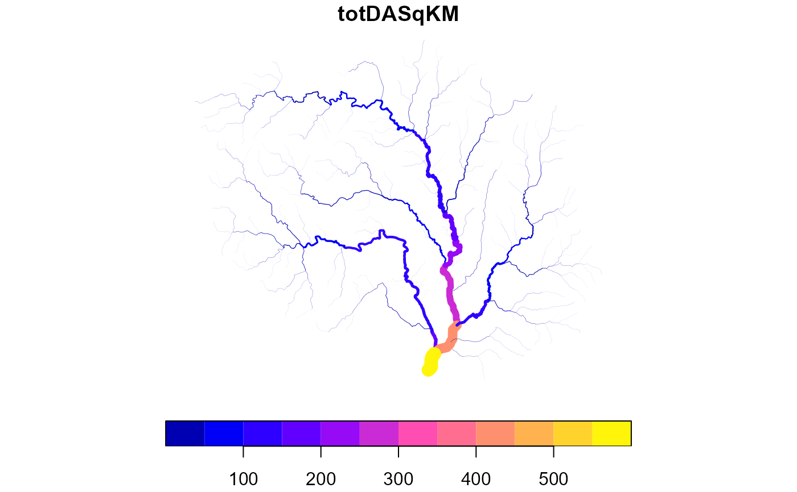
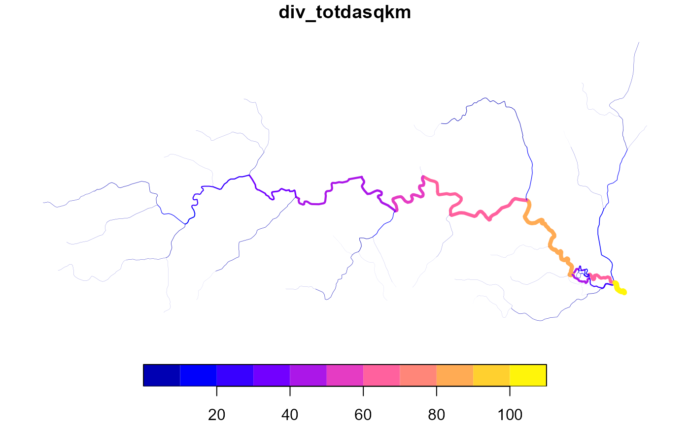
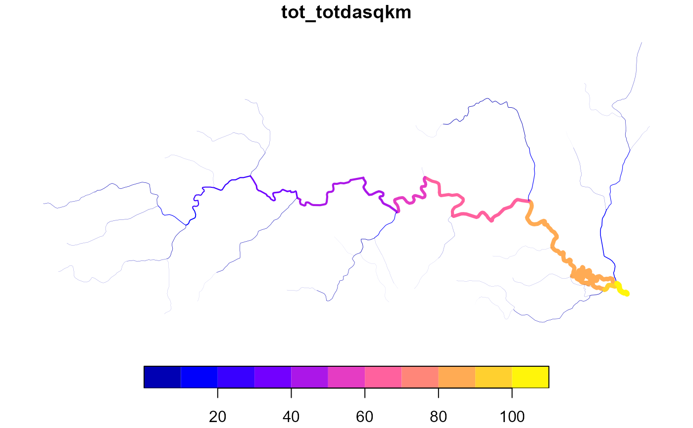

given a variable, accumulate according to network topology. See details for required attributes and additional information.
Usage
accumulate_downstream(x, var, total = FALSE, quiet = FALSE)
# S3 method for class 'data.frame'
accumulate_downstream(x, var, total = FALSE, quiet = FALSE)
# S3 method for class 'hy'
accumulate_downstream(x, var, total = FALSE, quiet = FALSE)Arguments
- x
data.frame network compatible with hydroloom_names.
- var
variable to accumulate.
- total
logical if TRUE, accumulation will use "total" apportionment if FALSE, divergence or dendritic apportionment will apply ( see details).
- quiet
logical quiet messages?
Details
Required attributes: id and toid or fromnode, tonode, and divergence
Conditionally: divergence_fraction
(if divergence apportioned routing is desired).
Accumulation Methods:
Divergence apportioned (divergence routing): Where upstream values are passed with
fractional apportionment such that each downstream connection gets between
0 and 100 percent of the upstream value. Requires a "divergence_fraction"
attribute and the "total" parameter to be FALSE.
Dendritic apportionment (no divergence routing): Where upstream values are not passed to
secondary paths at all – this is essentially a special case of divergence
apportioned where no diversion fraction value is provided and 0 is
assumed for all divergences. Do not include a "divergence_fraction" and
set "total" to FALSE.
No apportionment (total upstream): where upstream values are passed without being apportioned such that each downstream connection gets the full upstream value and there is special handling where diversions join back to the main flow to avoid double counting. This is also referred to as "total upstream routing". Set "total" to TRUE.
"No apportionment" (total upstream) routing includes considerably more logic and requires a noteable amount more computation to avoid double counting through systems of diverted channels. The implementation has been tested to match the total drainage area calculations of NHDPlusV2.
When flow splits at a diversion, the duplicated part is tracked until it recombines with the non-duplicated part. In this tracking, both nested diversions and diversions that have two or more flow splits in one place are supported. For this algorithm to work, it is critical that the supplied data be a directed acyclic graph and have a complete divergence attribute where 0 indicates no diversion, 1 indicates the main catchment downstream of a diversion and 2 indicates a secondary (one or more) downstram of a diversion.
Examples
x <- sf::read_sf(system.file("extdata/new_hope.gpkg", package = "hydroloom"))
net <- navigate_network_dfs(x, 8893236, "up")
x <- x[x$COMID %in% unlist(net), ]
# All default gives dendritic routing
x$dend_totdasqkm <- accumulate_downstream(add_toids(x), "AreaSqKM")
#> Dendritic routing will be applied. Diversions are assumed to have 0 flow fraction.
x$diff <- x$TotDASqKM - x$dend_totdasqkm
# notice that diversions reset as if they were headwaters
plot(x['dend_totdasqkm'], lwd = x$dend_totdasqkm / 20)

# add a diversion_fraction that splits flow evenly
# max(dplyr::n()) is the number of flowlines in a FromNode group.
y <- x |>
dplyr::group_by(FromNode) |>
dplyr::mutate(divergence_fraction = 1 / max(dplyr::n())) |>
dplyr::ungroup()
y$div_totdasqkm <- accumulate_downstream(y, "AreaSqKM")
# notice that diversions don't reset -- they carry a fraction of area
plot(y['div_totdasqkm'], lwd = y$div_totdasqkm / 20)

# total not implemented yet, but will be soon
z <- x |>
dplyr::select(COMID, FromNode, ToNode, Divergence, AreaSqKM, TotDASqKM)
z$tot_totdasqkm <- accumulate_downstream(z, "AreaSqKM", total = TRUE)
plot(z['tot_totdasqkm'], lwd = z$tot_totdasqkm / 20)

# equivalent values from the nhdplusv2 match!
any(abs(z$tot_totdasqkm - z$TotDASqKM) > 0.001)
#> [1] FALSE